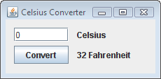

Lección: Aprender Swing con el EID (Entorno Integrado de Desarrollo) NetBeans
Esta lección le ofrece una introducción a la programación del Interfaz Gráfico de Usuario o IGU (Graphical User Interface o GUI, en inglés) con Swing y el EID NetBeans. Como aprendió en la lección "¡Hola Mundo!" para el EID Netbeans, el EID NetBeans es un entorno de desarrollo integrado multi-plataforma, de fuente abierta, y gratuito con soporte integrado del lenguaje de programación Java. Ofrece muchas ventajas sobre la codificación con un editor de texto; recomendamos su uso siempre que sea posible. Si no ha leído la lección de arriba, por favor tómese un momento para hacerlo ahora. Ofrece información valiosa sobre la descarga e instalación del KDJ y el EID NetBeans.
El objetivo de esta lección es introducirle a la IPA de Swing diseñando una aplicación simple que convierte la temperatura de grados Celsius a grados Fahrenheit. Su IGU será básico, enfocado sólo sobre un subconjunto de los componentes Swing disponibles. Usaremos el constructor de IGUs del EID NetBeans, el cual hace que la creación del interfaz de usuario sea una simple cuestión de arrastrar y soltar. Su características de generación automática de código simplifican el proceso de desarrollo del IGU, permitiéndole enfocarse en la lógica de la aplicación en vez de en la infraestructura que hay por debajo.
Debido a que esta lección es una lista de verificación paso a paso de acciones específicas a tomar, recomendamos que ejecute el EID NetBeans y realize cada paso mientras lo lee. Esta será la forma más rápida y fácil de empezar a programar con Swing. Si no puede hacerlo, simplemente leerlo de principio a fin debería ser aún útil, ya que cada paso está ilustrado con capturas de pantalla.
Si usted prefiere la aproximación tradicional de programar cada componente manualmente (sin la asistencia de un EID), piense de esta lección como un punto de entrada a las discusiones de bajo nivel ya proporcionadas en otras partes del tutorial. Los hiperenlaces en cada discusión le llevarán a las lecciones relacionadas, si desea aprender tales detalles de bajo nivel.
El IGU terminado para esta aplicación se verá de la siguiente manera:

La Aplicación CelsiusConverter.
Pulse el botón Launch para ejecutar CelsiusConverter usando Java™ Web Start (descargar KDJ 7 o posterior). Alternativamente, para compilar y ejecutar el ejemplo por sí mismo, consulte el índice de ejemplos.

Desde la perspectiva del usuario final, el uso es simple: introduzca una temperatura (en grados Celsius) en la caja de texto, pulse el botón "Convert", y observe la temperatura convertida (en grados Fahrenheit) aparecer en pantalla. Los botones de minimizar, maximizar y cerrar se comportarán como se espera, y la aplicación también tendrá un título que aparece a lo largo de la parte superior de la ventana.
Desde la perspectiva de un programador, escribiremos la aplicación en dos etapas principales. En primer lugar, vamos a poblar la interfaz gráfica de usuario con los distintos componentes Swing y organizarlos como se muestra arriba. Entonces, añadiremos la lógica de la aplicación, de forma que el programa realize una conversión cuando el usuario presione el botón "Convert".
Si está interesado en usar JavaFX para crear su IGU, vea la Documentación de JavaFX y el Wiki NetBeans - JavaFX.